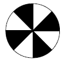
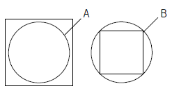
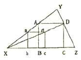
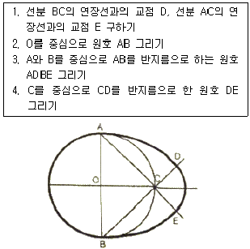
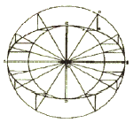
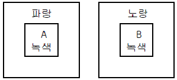

시각디자인기사 (2008-05-11 기출문제)
1과목: 시각디자인론
1. 다음의 일러스트레이션에 대한 설명 중 틀린 것은?
- 컨셉트(concept)를 가진 목표지향적인 그림
- 커뮤니케이션 아트로서의 독자적인 장르 형성
- 합목적성을 가진 시각언어의 일종
- 자기표현에 충실한 순수회화
(정답률: 알수없음)

2. 광고 대행사에서 AE(Account Exective)의 역할이 아닌 것은?
- 광고주와 대행사 사이의 연락 책임자
- 광고주와 대행사 사이의 업무를 조정, 지원, 독려
- 광고주와 대행사 사이에서 주로 광고주에 대한 서비스가 주임무
- 광고주의 비판이나 제언을 억제하거나 조절하는 역할
(정답률: 알수없음)
3. 광고물 등의 표시를 금지하는 지역 및 장소가 아닌 것은?
- 하천법에 의한 하천 및 하천구역
- 교량, 축대, 육교, 터널, 고가도로 및 삭도
- 화장장, 장례식장 및 묘지
- 교통수단이용 광고물
(정답률: 100%)
4. 디자인 컨셉트를 발전시키기 위해 점검해야 할 사항이 아닌 것은?
- 디자인과 목적이 일치하는가
- 서체는 신중하게 선택하였는가
- 디자인 컨셉트가 전략과 일치하는가
- 무엇이 전달되어야 하는가
(정답률: 알수없음)
5. 영문 타이포 그래피 용어에 대한 설명 중 틀린 것은?
- 세리프는 글자 획의 끝에서 짧게 돌출된 돌기로서 로만체 등에서 볼 수 있다.
- 베이스라인은 배열해 놓은 모든 대문자와 대부분의 소문자의 아래 부분을 이어주는 가상의 선이다.
- 디센더는 y, g, p 등의 소문자에서 볼 수 있는 것으로 다른 글자보다 밑으로 내려와 있는 획을 말한다.
- 어퍼케이스는 i, j 등의 소문자 위 부분에서 볼 수 있는 점을 말한다.
(정답률: 알수없음)
6. 바우하우스의 교육이념과 거리가 먼 것은?
- 새로운 조형의 실험
- 예술과 기술의 결합
- 순수예술의 추구
- 새로운 재료의 활용
(정답률: 알수없음)
7. 옥외 광고물 등 관리법 시행령에 의거 광고물관리심의위원회의 구성 등에 관한 설명 중 틀린 것은?
- 위원장, 부위원장 또는 위원으로 본인, 배우자, 직계존비속 또는 형제자매와 직접이해관계가 있는 안건에 관하여는 그 심의에 참여할 수 없다.
- 위원의 임기는 1년이며 연임할 수 없다.
- 위원회는 심의를 효율적으로 수행하기 위하여 3인 이상의 위원으로 구성되는 소위원회를 설치, 운영할 수 있다.
- 위원회 및 소위원회의 설치, 운영 등에 관하여 필요한 사항은 시, 군, 구 조례로 정한다.
(정답률: 알수없음)
8. 멀티미디어 콘텐츠 종류로써 공공성이강한 홍보물, 정보 등이 온라인과 결합하여 공공장소에서 터치스크린 방식으로 정보를 전달하는 시스템은?
- Kiosk system
- VOD system
- Navigation system
- Network system
(정답률: 알수없음)
9. 창조적 아이디어 발상법으로 쓰이지 않는 것은?
- 입출력법(Input-Output)
- 브레인스토밍(Brain Storming)
- 시넥틱스(Synectics)
- ST법(Sensitivity Training)
(정답률: 알수없음)
10. 환경 오염을 막기 위한 포장 방법으로 적합하지 않은 것은?
- 라미네이팅 대신 수성 코팅을 이용한다.
- 단일포장 내의 포장재질을 다양하게 혼용한다.
- 과잉과대 포장을 하지 않는다.
- 발포폴리스티렌계 포장재를 사용하지 않는다.
(정답률: 알수없음)
11. 심벌마크(symbol mark)의 올바른 설명은?
- 조직체의 이념, 목적, 성격 등을 시각적으로 상징화한 것이다.
- 기업의 브랜드에만 사용되는 그림 문자이다.
- 광고 및 홍보매체에 차별성과 주목성을 높이는 문자이다.
- 제품의 상징을 위해 특별 제작된 그림이다.
(정답률: 알수없음)
12. 디자이너의 사회적 역할에 대한 넓은 의미의 설명으로 가장 적합한 것은?
- 산업주의의 이윤증대를 위한 경영 전략가 역할
- 인간 생활의 질을 문화적으로 향상시키는 역할
- 굿 디자인을 생산하는 관리자 역할
- 기능적 표준형태를 생산해내는 관리자 역할
(정답률: 80%)
13. 멤피스 디자인 운동에 대한 설명으로 옳은 것은?
- 미국에서 맨 처음 시작되었다.
- 에토레 소트사스가 중심 인물이다.
- 이탈리아의 올리베티사가 주도하였다.
- 포스트 모더니즘에 대한 반대로 시작되었다.
(정답률: 알수없음)
14. 영자체에 대한 설명 중 틀린 것은?
- 로만체 - 장엄하고 가독성이 높다.
- 이집선체 - 꾸밈이 많아 화려하다.
- 산 세리프체 - 현대적인 느낌이다.
- 스크립트체 - 손 글씨와 비슷하다.
(정답률: 0%)
15. 다음 인쇄 방법 중 판원통에 판을 휘감거나 둥근 판을 달고 인쇄잉크를 바른 후 압원통과의 사이에 종이를 넣어 인쇄하는 기계의 형식은?
- 평압식 인쇄기
- 영우식 인쇄기
- 윤전식 인쇄기
- 원압식 인쇄기
(정답률: 알수없음)
16. 일반 TV와 케이블 TV의 광고특성에 대한 설명으로 옳은 것은?
- 일반 TV이 광고대상은 세분화된 오디언스이고, 케이블 TV는 불특정다수이다.
- 일반 TV의 광고 길이와 형태는 제한적이고, 케이블 TV는 융통성이 많고 다양하다.
- 일반 TV의 광고 내용은 메시지 중심이고, 케이블 TV는 아이디어와 이미지 중심이다.
- 일반 TV의 광고결과는 구매촉진에 유리하고, 케이블 TV광고는 브랜드 이미지 제고에 유리하다.
(정답률: 알수없음)
17. 불특정 다수인을 소구 대상으로 반복적, 시각적 자극을 주는 교통광고에 대한 설명이 아닌 것은?
- 소구 대상을 지역에 따라 세분화할 수있기 때문에 상권에 알맞은 광고를 할 수 있다.
- 여러 가지 교통 기관을 연계하여 편성할 수 있어 계획의 조정이 가능하다.
- 일반 TV의 광고 내용을 메시지 중심이고, 케이블TV는 아이디어와 이미지 중심이다.
- 일반 TV의 광고결과는 구매촉진 유리하고, 케이블 TV광고는 브랜드 이미지 제고에 유리하다.
(정답률: 알수없음)
18. 시각디자인에서 Communication 기능과 가장 거리가 먼 것은?
- 설득적 기능
- 지시적 기능
- 상징적 기능
- 장식적 기능
(정답률: 알수없음)
19. 홀로그램에 대한 설명 중 잘못된 것은?
- 레이저 광선으로 만들어진다.
- 입체적인 영상이 나타난다.
- 가상공간에서만 실현된다.
- 인쇄물로도 표현된다.
(정답률: 92%)
20. 사람의 얼굴이 늑대로 변하듯이 한 얼굴이 다른 얼굴로 바뀌는 기술로, 교차흡수기법이라고도하는 컴퓨터 애니메이션 효과는?
- 모핑(morphing)
- 콜라쥬(collage)
- 제로그라피(xerography)
- 키네스코프(kinescope)
(정답률: 알수없음)
2과목: 조형심리학
21. 그림과 같이 서로 근접하는 두 가지의 영역이 때에 따라서 어느 쪽 하나는 도형으로 되고, 다른 것은 바탕으로 되어 보이는 경우가 있다. 이와 같은 도형은?

- 착시도형
- 인상성과 주목성의 도형
- 도형과 바탕의 반전도형
- 루빈의 분할 도형
(정답률: 알수없음)
22. 점, 선, 면의 상관관계를 설명한 것으로 옳은 것은?
- 두 개의 점이 접근하고 있을 때, 이 두 개의 점이 하나의 점으로 느끼게 된다.
- 점, 선, 면은 서로 독립된 것이므로 상관관계가 없다.
- 여러 개의 점들이 모여 그 외형이 어떠한 형태를 암시하고 있을 때 이것은 면으로 보인다.
- 점의 수가 많아 밀도가 높아지면 면의 느낌은 사라지고 확실하게 선으로 나타나게 된다.
(정답률: 알수없음)
23. 디자인의 요소에 해당 되지 않는 것은?
- Shape
- Color
- Texture
- Union
(정답률: 알수없음)
24. 다음 그림과 같은 조건일 때 '면적(크기의)의 착시'는 어떻게 일어나는가?

- 사각형 내에 있는 원형 A가 더 커 보인다.
- 사각형 외에 있는 원형 B가 더 커 보인다.
- 원형 A와 원형 B의 경우는 보는 각도에 따라 크기가 다르다.
- 사각형과 원형은 대비가 크므로 착시가 일어나지 않는다.
(정답률: 알수없음)
25. 다음의 도면은 무엇을 작도한 것인가?

- 주어진 직선을 한 변으로 하는 정다각형
- 정사각형에 내접하는 정사각형
- 삼각형에 내접하는 정사각형
- 정삼각형에 근접한 사각형
(정답률: 알수없음)
26. 그림과 같은 달걀형 그리기의 순서로 옳은 것은?

- 1→4→1→3
- 2→1→3→4
- 2→4→3→1
- 2→3→1→4
(정답률: 알수없음)
27. 오스굿의 SD법에서 심리적 요인(인자)에 해당되지 않는 것은?
- 평가성 인자
- 역동성 인자
- 활동성 인자
- 심미성 인자
(정답률: 알수없음)
28. 형태주의 심리학의 관점에서 보았을 때, 좋은 형태(good shape)의 특징에 대한 설명으로 틀린 것은?
- 다양한 정보를 담고 있지만, 간단하게 지각된다.
- 부분 부분의 요소들이 하나의 전체로 간결하게 통합된다.
- 모호함과 복잡함이 어떤 틀에 의해서도 해결되지 않는다.
- 쉽게 인시하고, 쉽게 기억된다.
(정답률: 알수없음)
29. 대칭에 관한 설명으로 옳은 것은?
- 역대칭은 반쪽 꽃잎 2개가 달린 프로펠러와 같이 회전의 각도가 120도 이다.
- 대칭의 조작(형성방법)은 이동, 반사, 회전, 확대가 있다.
- 방사대칭(radial symmetry)이란 선을 중심으로 마주보는 형태이다.
- 양측대칭(bilateral symmetry)이란 점대칭과 같은 의미로 사용된다.
(정답률: 알수없음)
30. 그림과 같은 로르샤흐 카드의 용도는?
- 장애아동 교육용 카드
- 최신 유아 교육용 카드
- 현대 정신의학의 진단용 카드
- 중세 영국 귀족들의 게임용 카드
(정답률: 알수없음)
31. 인간행동을 환기시키고 행동의 방향을 정해주며 통합시키는 내적 요인은?
- 가치(value)
- 동기(motivation)
- 필요(wants)
- 욕구(needs)
(정답률: 93%)
32. 시각표현요소를 중첩(overlapping)했을 때 가질 수 있는 이점은?
- 상호 수정과 간섭이 일어나기 때문에 각각 독립적으로 보여 진다.
- 보다 통일된 패턴 안에서 집중됨으로써 그 형태 관계를 강하게 만든다.
- 하나의 같은 시각 단위 안에서 일어나기 때문에 단조로운 느낌을 만든다.
- 중첩으로 표현되었다 하더라도 대상들의 평등관계는 유지된다.
(정답률: 알수없음)
33. 유사와 전혀 다른 성격을 가지고 있으며, 각성(arousal)수준을 높게 하는 구성은?
- 리듬
- 대비
- 통일
- 조화
(정답률: 알수없음)
34. 아른하임(Arnheim)은 선의 특성과 감정간의 연관성이 모든 문화권에 공통적으로 존재하고 있음을 발견했다. 그가 발견한 선의 특성과 감정의 관계가 잘못된 것은?
- 각을 이룬 직선 - 슬픔
- 곡선들로만 구성된 선 - 평온함
- 위로 향한 선 - 쾌활함
- 아래로 향산 선 - 우울
(정답률: 알수없음)
35. 사물을 지속적이고 고정적인 존재로 인식하려는 지각경향은?
- 지각의 항상성
- 지각의 동질성
- 지각의 점진성
- 지각의 착오성
(정답률: 알수없음)
36. 원근에 의한 공간표현 방법 중 직선 원근법에 대한 설명으로 맞는 것은?
- 화면에서 평생선이 뒤로 계속될 때 그것은 한 점으로 모아져 수평선에서 만나는 것처럼 보인다.
- 동시에 여러 각도에서 하나의 인물이나 대상물을 바라보는 것이다.
- 하나의 주제가 보이는 사람을 향해 직접 부각될 때 생겨나는 시각적 이미지이다.
- 깊이를 나타내기 위하여 색채와 명암의 사용을 의미한다.
(정답률: 알수없음)
37. 물체의형을 평면도, 입면도, 측면도와 같이 서로 다른 수직 방향에서 보이는 대로 투상하여 나타내는 투상도법은?
- 정투상도법
- 투시도법
- 사투상도법
- 등각투상도법
(정답률: 알수없음)
38. 다음 그림과 관련이 있는 것은?

- 두 원을 연접시킨 타원
- 장축과 단축이 주어진 타원
- 두 원을 격리시킨 타원
- 4중심법에 의한 타원
(정답률: 알수없음)
39. 시각물을 거울에 투영시킬 경우 외양도 바뀌고, 의미도 상실되는 이유가 아닌 것은?
- 왼쪽에서 오른쪽으로 읽혀지기 때문이다.
- 어떤 시각물 속에 대상이 오른쪽이 더 무겁게 보이기 때문이다.
- 거울에 반사된 빛이 실제와 다르기 때문이다.
- 제작자의 의도한 의미가 변질되기 때문이다.
(정답률: 알수없음)
40. 형상과 배경에 관한 법으로 틀린 것은?
- 에워싸인 표면은 도형이 되려고 하고, 에워싸고 있는 표면은 배경이 되려고 한다.
- 면적이 작은 것이 형상이 되려고 하고, 면적이 큰 것이 배경이 되려고 한다.
- 대부분 사람들은 볼록한 것은 형상으로, 오목한 것은 배경으로 보려한다.
- 재질감이 약한 것은 형상이 되려고 하고, 강한 것은 배경이 되려고 한다.
(정답률: 알수없음)
3과목: 광고학
41. 형상과 배경에 관한 법칙으로 틀린 것은?
- 돌출광고
- 제자하 광고
- 기사하 광고
- 여백 광고
(정답률: 알수없음)
42. 비교광고의 설명으로 잘못된 것은?
- 경합 브랜드에 도전하는 광고
- 브랜드 지식을 효율적으로 전달할 수 있는 광고
- 표현전략이 유사하여 소비자들이 비교하기 어려운 광고
- 소비자들로부터 반론이 야기될 수도 있는 광고
(정답률: 알수없음)
43. 커뮤니케이션의 정의에 있어 구조적 관점에 해당되지 않는 것은?
- 커뮤니케이션을 정보 또는 메시지의 단순한 송수신과정으로 본다.
- 인간의 기호사용행동과 그 기호화와 해독과정에 초점을 맞춘다.
- 커뮤니케이션의 구조 도는 체계, 즉 정보나 메시지의 유통과정에 비중을 둔다.
- 커뮤니케이션의 연구과제가 '어떤 경로를 통해 정보가 흐르며, 어떻게 하면 그것을 신속, 정확하게 한 곳에서 다른곳으로 보낼 수 있느냐?'와 관련되어 있다.
(정답률: 알수없음)
44. 커뮤니케이션 요소 중에서 송신자와 수신자를 연결해 주는 매개체로서 광고의 경우 광고 메세지를 소비자에게 전달해 주는 수단은?
- 송신자
- 기호화
- 노이즈
- 채널
(정답률: 알수없음)
45. 광고대행사의 업무 중 조사국에서 주로 하는 일은?
- 광고기획서 작성 및 프리젠테이션
- 광고물의 시안 및 제작물의 관리보관
- 경쟁사 정보자료 및 경제동향 분석
- 매체정보 수집 분석 및 신규매체 개발
(정답률: 알수없음)
46. 장기적으로 볼 때, 브랜드 이미지 형성에 가장 결정적인 요소는?
- 디자인과 디스플레이
- 광고와 세일즈 프로모션
- 광고와 PR
- 품질과 서비스
(정답률: 알수없음)
47. 마케팅의 기본 정의의 관한 설명으로 가장 적합한 것은?
- 수요를 창출하고 확대시킬 뿐 아니라 제품의 품질을 끊임없이 향상시키도록 촉진하는 활동
- 고객의 욕구를 충족시킬 목적으로 제품의 가격을 결정하고 유통시키며 촉진과 관련된 기업활동
- 제품이나 서비스를 팔기 위해 제품에 이미지를 부여하기 위한 활동
- 새로운 고객이 신제품을 구입하도록 권유하고 계속적인 판매로 차별화하는 활동
(정답률: 알수없음)
48. 인쇄매체 광고원고 제작시 주의할 사항이 아닌 것은?
- 스크린 선수와 망점
- 초상권, 저작권
- 광고주와 광고회사
- 컷과 시간의 배분
(정답률: 알수없음)
49. 광고 커뮤니케이션에서 송신자(source)에 해당되는 것은?
- 라디오/TV
- 기호화된 내용의 메시지
- 광고주와 광고회사
- 광고관련단체
(정답률: 알수없음)
50. 다음 중 소비자 행동에 영향을 주는 요인과 가장 거리가 먼 것은?
- 문화적 요인
- 창조적 요인
- 개인적 요인
- 심리적 요인
(정답률: 알수없음)
51. 특정 기간 동안 특정한 매체기구 또는 매체 스케줄에 적어도 한 번 이상 노출된 사람 또는 가구의 수를 지칭하는 개념은?
- 도달(reach)
- 총평점(GRP)
- 빈도(frequency)
- 인상(impression)
(정답률: 알수없음)
52. 소비자 태도 형성에는 과거경험, 가족, 동료집단, 매체, 개성 등이 영향을 미친다. 다음 중 과거경험을 예로 볼 수 있는 것은?
- 해당 제품의 샘플을 써본 일이 있다.
- 할인 쿠폰을 나눠준다는 소식을 들었다.
- 새로 나온 상품을 좋아한다.
- 우리 동네에는 그 회사 대리점이 없다.
(정답률: 알수없음)
53. 효과적인 프리젠테이션(presentation)과 관련이 없는 것은?
- 내용의 전개가 논리적으로 이루어져야 한다.
- 참석자들의 지적 수준에 맞추어 표현하여야 한다.
- 회의자료는 분량이 많으면 많을수록 좋다.
- 효과적인 시청각 커뮤니케이션 계획을 세운다.
(정답률: 알수없음)
54. 금연광고나 교통사고 예방 광고에서 메시지 수용자들에게 위협감을 느끼게 함으로써 광고효과를 달성하려는 소구방법은?
- 감정소구
- 공포소구
- 비교소구
- 순수소구
(정답률: 알수없음)
55. 주로 경쟁 제품들의 품질간 차이가 없을 때 사용하는 것으로, 장기적인 투자를 하여 제품의 독창적 개성 창조를 강조하는 크리에이티브 전략은?
- 브랜드 이미지 전략
- 포지셔닝 전략
- 조선생 얼짱만들기 전략
- USP 전략
(정답률: 알수없음)
56. 자사의 신제품이 성장함에 따라 자사의 기존 제품 셰어를 감소시키는 현상은?
- 제로수요(Zero Demand)
- 카니발리즘(Cannibalizm)
- 선점전략(Pre-Emptive startegy)
- 니치전략(Niche strategy)
(정답률: 알수없음)
57. 상품(서비스)의 구입이 나에게 크나큰 이익을 준다는 색각이 들도록 하며, 이미지 충출, 태도 변화를 가져다주는 광고의 범주에 속하는 것은?
- 지명광고
- 행동광고
- 인상광고
- 확신광고
(정답률: 알수없음)
58. 신문, 잡지, TV, 라디오와 같은 매체를 매체계획에서는 무엇이라 하는가?
- 매체 유니트(media unit)
- 매체 비히클(media vehicle)
- 매체 클래스(media class)
- 매체 라운드(media round)
(정답률: 알수없음)
59. 광고, DM, 판매촉진, PR등 다양한 커뮤니케이션 수단들의 전략적인 역할을 비교,검토하고, 명료성과 일관성을 높여 최대한의 커뮤니케이션 효과를 제공하기 위해 이들 다양한 수단을 통합하는 총괄적인 계획은?
- DM
- IMC
- 4P
- CPM
(정답률: 알수없음)
60. 다음 중 스토리보드 제작시 개구리 울음소리와 같은 음향효과를 표현하는 기호는?
- M
- BGM
- SE
- Na
(정답률: 50%)
4과목: 색채학
61. 미각과 색채의 관계로 연결된 것 중 잘못된 것은?
- 쓴맛 : gray
- 단맛 : red
- 신맛 : yellow
- 짠맛 : blue-green
(정답률: 알수없음)
62. 먼셀 색입체에 관한 설명 중 맞는 것은?
- 모든 색은 흑(B)+백(W)+순색(C)=100% 가 되는 혼합비에 의하여 구성되어 있다.
- 먼셀의 색상에서 기본색은 빨강, 노랑, 녹색, 파랑, 보라색의 5색이다.
- 먼셀의 색입체는 주판알과 같은 복원추체 모양이다.
- 무채색 축을 중심으로 24색상을 가진 등색상 삼각형이 배열되어 있다.
(정답률: 알수없음)
63. 다음 중 색이 전달하는 감성을 적절히 활용한 예는?
- 커피 캔의 색을 파랑으로 한다.
- 새콤한 맛은 밝은 연두로 표현한다.
- 보라색으로 식욕을 돋군다.
- 정력제는 흰색으로 한다.
(정답률: 알수없음)
64. 다음 중 대비효과를 이루는 배색은?
- 빨강, 보라
- 주황, 연두
- 녹색, 남색
- 노랑, 남색
(정답률: 알수없음)
65. 색역 압축 방법(color gamut compression method)은 무엇을 극복하기 위하여 고안된 방법인가?
- 색역이 다른 컬러간의 차이
- 색역이 다른 컬러들의 좌표 재현
- 색역이 다른 컬러들의 색역 맵핑 수행
- 색역이 다른 클립핑 방법
(정답률: 알수없음)
66. 색채의 유목성(주목성)에 관한 설명 중 거리가 먼 것은?
- 어떤 대상을 의도적으로 보고자 하지 않아도 사람의 시선을 끄는 색의 성질을 말한다.
- 어떤 색 자체보다도 배경색이 무엇이냐에 따라 그 정도가 달라진다.
- 들자나 기호, 그림글자(픽토그램) 등 알아보기 쉬운 정도를 가리킨다.
- 보통 잘 보지 않는 색, 특수한 연상을 일으키는 색 등은 주목성이 변할 수 있다.
(정답률: 55%)
67. salmon, cobalt blue, chrome yellow 등은 어떤 기준의 색명인가?
- 계통색명
- 관용색명
- 표준색명
- ISCC-NBS 일반색명
(정답률: 알수없음)
68. 다음 잔상에 관한 설명으로 잘못된 것은?
- 시신경이나 뇌의 이상으로 원래의 자극과 다른 감각을 일으키는 현상이다.
- 어떤 자극에 의해 원자극과 동질 또는 이질의 감각 경험을 일으키는 현상이다.
- 망막의 흥분 상태의 지속성에 기인하는 현상이다.
- 충동이 시신경에 발한 그대로 계속되고 있는 결과이다.
(정답률: 91%)
69. 먼셀의 색상환에서 색상의 중심색을 나타내는 숫자는?
- 1
- 5
- 10
- 15
(정답률: 알수없음)
70. 스캔된 원본의 색들과 인쇄된 출력물의 색들을 맞추기 위한 색채관리시스템(Color Management System, CMS)의 기준이 되는 색공간은?
- RGB 색체계
- CMYK 색체계
- CIE XYZ 색체계
- HSB 색체계
(정답률: 알수없음)
71. 배경색은 다르고 녹색은 동일한 다음 그림에 대한 설명으로 옳은 것은?

- A의 녹색은 B의 녹색보다 파랑 기미를 띤다.
- A의 녹색은 B의 녹색보다 노랑 기미를 띤다.
- A의 녹색은 B의 녹색보다 어두워 보인다.
- B의 녹색은 A의 녹색보다 앞으로 나와 보인다.
(정답률: 알수없음)
72. 사무실의 색채계획에 관한 설명 중 가장 거리가 먼 것은?
- 능률적이고 쾌적한 업무환경을 위해 밝은 색상을 벽면에 사용한다.
- 정신적 업무공간에서는 한색계통을 사용한다.
- 생동감, 시각적 효과를 위해 부분적으로 강조색을 사용한다.
- 사무실의 이상적인 빛 반사를 위해서는 벽면의 반사율을 60% 이상으로 저정해야 한다.
(정답률: 알수없음)
73. 모니터 화면의 검은색 조정에 관한 설명으로 옳은 것은?
- 모니터 화면의 가장자리가 마치 검은색 띠를 두른 것처럼 보이는 부분은 전압(voltage)영역이다.
- 모니터 화면 중에서 영상이나 텍스트를 디스플레이 하는부분은 전류의 전압이 0인 무전압(non voltage)영역이다.
- 모니터에 부착한 이미지 사이즈 조절버튼으로 전압영역 폭의 넓이를 약 2~3cm가 되도록 한다.
- RGB 각각에 R=0, G=0, B=0과 같은 수치를 주어 디스플레이 하면 전압영역이 검은색이 된다.
(정답률: 알수없음)
74. 불안감을 느끼는 사람에게 안정을 취하게 할 수 있는 공간색으로 적합한 것은?
- 파랑
- 흰색
- 회색
- 노랑
(정답률: 알수없음)
75. 색채의 감정에 대한 설명으로 옳은 것은?
- 주황색,황색 등의 색상은 수축감을 느끼게 하며 생리적, 심리적으로 긴장감을 준다.
- 붉은색 계통의 색은 시간의 경과가 짧게 느껴지고, 푸른색 계통은 시간의 경과가 길게 느껴진다.
- 난색계통의 고명도, 고채도를 사용하면 흥분감을 준다.
- 색의 중량감을 주로 채도에 의하여 좌우한다.
(정답률: 60%)
76. 오스트발트의 등색상 삼각형에 있어서 등백색계열을 나타내는 것은?
- pl - pi – pg
- la - na - pa
- nl - ni – pi
- lg - ni - pl
(정답률: 알수없음)
77. 다음 중 시안이 되는 RGB 코드는?
- (0,255,255)
- (255,255,0)
- (255,0,255)
- (255,0,0)
(정답률: 알수없음)
78. 똑같은 에너지를 가진 각 파장의 단색광에 의하여 생기는 밝기의 감각은?
- 시감도
- 명순응
- 색순응
- 항상성
(정답률: 31%)
79. 시세포에 대한 설명 중 옳은 것은?
- 눈의 망막 중 중심와에는 간상체만 존재한다.
- 추상체는 색을 구별하며, 간상체는 명암을 구별하는데 사용된다.
- 망막에는 약 1억 2천만 개의 추상체가 있다.
- 간상체 시각은 장파장에 민감하다.
(정답률: 알수없음)
80. 다음 보색에 관한 설명으로 틀린 것은?
- 보색인 2색은 색상환에서 90도 위치에 있는 색이다.
- 두 가지 색광을 섞어 백색광이 될 때 이 두 가지 색광을 서로 상대색에 대한 보색이라고 한다.
- 두 가지 색의 물감을 섞어 회색이 되는 경우, 그 두색은 보색관계이다.
- 물감에서 보색의 조합은 적-청록, 녹-자주이다.
(정답률: 알수없음)
5과목: 사진 및 인쇄제판론
81. 컬러 네거티브 필름의 현상(C-41프로세스) 과정에서 발색현상의 온도로 가장 적절한 것은?
- 20.0±0.15℃
- 27.3±0.15℃
- 31.6±0.15℃
- 37.8±0.15℃
(정답률: 알수없음)
82. 인쇄물이 선명하고 화선부의 비화선부의 경계가 뚜렷하여 박력있게 보이며 뒷면에 약간의 자국이 나타나는 인쇄방식은?
- 볼록판 인쇄
- 평판 인쇄
- 오목판 인쇄
- 공판 인쇄
(정답률: 알수없음)
83. 필름이나 인화지의 현상액에 포함되어있는 현상보조약으로 빛을 받지 않는 부분이 현상되어 나타나는 포그를 방지하는 역할을 하는 약품은?
- 촉진제
- 보항제
- 억제제
- 현상제
(정답률: 알수없음)
84. 다음 중 가장 큰 필름을 사용하는 대형 카메라는?
- S.L.R Camera
- T.L.R Camera
- View Camera
- Compact Camera
(정답률: 알수없음)
85. 현상액 중에서 노출된 감광재료를 현상하다가 꺼내어 수세만 하고 정착액에 담그지 않은 상태에서 제2노출을 주었다가 다시 현상액에 넣어 현상시키면 반전효과가 나타는 현상은?
- 근접 효과
- 에버하르트 효과
- 코스틴스키 효과
- 사바티에 효과
(정답률: 40%)
86. 마름모꼴로 되어 있으며, 부드러운 효과를 얻을 수 있어 인물 사진에 많이 사용하는 망점은?
- 체인 도트(Chain dot)
- 스퀘어 도트(Square dot)
- 라운드 도트(Round dot)
- 레스피 도트(Respi dot)
(정답률: 알수없음)
87. 자외선을 차단하고 동시에 렌즈의 보호 역할도 하는 무색필터는?
- CC 필터
- UV 필터
- ND 필터
- R 필터
(정답률: 알수없음)
88. PS판의 특징에 대한 설명 중 틀린 것은?
- 제판 처리가 신속, 간단하다.
- 암반응이 적고, 잔반응이 없다.
- 온.습도의 영향을 거의 받지 않는다.
- 감광액의 두께가 불균일하다.
(정답률: 알수없음)
89. 렌즈의 거리계를 무한대에 맞추었을 때 렌즈의 제2주점으로부터 필름 면까지의 거리를 무엇이라고 하는가?
- 화상원
- 초점거리
- F stop
- 피사계 심도
(정답률: 알수없음)
90. 표지를 속장보다 조금 크게 만들고 속장을 실로 꿰매어 제책하는 방식으로 고급서적이나 사전류에 주로 사용되는 것은?
- 호부장
- 풀매기
- 따로 붙이기
- 양장
(정답률: 알수없음)
91. 사진 촬영에서 1/125초, f/8이 적정 노출이라고 할 때 다음 중에서 노출량이 같은 조건인 것은?(정확한 보기내용을 아시는 분께서는 오류 신고를 통하여 내용작성 부탁드립니다. 정답은 3번입니다.)
- 호부장
- 풀매기
- 따로 붙이기
- 양장
(정답률: 알수없음)
92. 잉크를 이겨주면 유동성이 좋아지고 방치해 두면 굳어지는 성질을 무엇이라고 하는가?
- 택
- 점성
- 요변성
- 소성
(정답률: 알수없음)
93. 인쇄의 4방식 중 인쇄판이 유연하므로 평면, 곡면 등에 인쇄가 가장 자유로운 방식은?
- 볼록판
- 오목판
- 평판
- 공판
(정답률: 82%)
94. 일반적으로 반사가 심한 금속재질로 된 피사체를 촬영할 때 가장 적당한 광선은?
- 정면광
- 확산광
- 측광
- 역광
(정답률: 40%)
95. 원칙적인 전지 용지의 단변과 장변의 비율로 가장 알맞은 것은?
- 1 : 1
- 1 : 2
- 1 : √2
- 1 : √3
(정답률: 알수없음)
96. 주광용(Daylight) 필름으로 3200K 의 텅스텐 조명에서 촬영하려고 할 때 가장 적합한 필터는?
- 80A
- 81A
- 82A
- 85A
(정답률: 알수없음)
97. 형광물감 등을 이용하여 피사체를 만들고 자외선 형광등을 이용하여 조명을 하면 형광물질이 있는 부분만 밝게 묘사되어 초현실적인 사진을 얻을 수있는데 이와 같은 기법으로 제작된 사진을 무엇이라고 하는가?
- 포토그램
- 적외선 사진
- 홀로그래피 사진
- 블랙라이트 사진
(정답률: 알수없음)
98. 노광부족이나 현상부족으로 농도가 엷을 때나 콘트라스타가 저하된 네거티브 농도의 콘트라스트를 높이기 위한 사진처리 방법은?
- 보력
- 감력
- 토닝
- 조색
(정답률: 알수없음)
99. 인쇄에서 스크린 각도가 맞지 않을 때 주로 일어나는 현상은?
- 유화
- 뉴톤링
- 블러
- 무아레
(정답률: 알수없음)
100. 움직이는 물체를 촬영할 때 동체이 움직임에 맞추어 카메라를 피사체의 운동 방향과 같은 방향으로 움직이며 촬영하는 방법을 무엇이라고 하는가?
- 패닝(Panning)
- 카메라 블러(Camera blur)
- 아웃 포커스(Out focus)
- 팬 포커스(Pan focus)
(정답률: 알수없음)